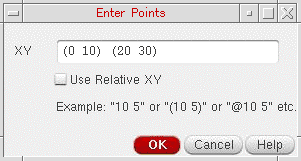

Entering Points Using the Enter Points Form
To specify the points to create an object using the Enter Points form:
- In the layout window, start the command for creating an object. For example, to create a rectangle, choose Create – Shape – Rectangle.
-
Choose Tools – Enter Points.
The Enter Points form opens.
 -
Enter points in the XY field. For example:
(0 10) (20 30)
- Click OK.
A rectangle is created with (0 10) as the first corner and (20 30) as the corner that is diagonally opposite to the first corner.
You can also use the X, Y, dX, and dY fields on the status toolbar to specify the points to create an object.
All point adjustment commands such as DRD, Grid, Snap Mode, Acute Angle, and Gravity are disabled when the points are entered using the Enter Points form. For example, the gravity settings are not applicable when you use the Enter Points form to specify points.
For information about using the Enter Points form and the status toolbar to specify points for the create and edit commands, watch the video Enter Points for Create and Edit Commands. Access to the video depends on the availability of a web browser and a Cadence Online Support account.
Related Topics
Points Formats Supported in the Enter Points Forms
Object Creation by Entering Points
Entering Points in the CIW to Create Objects
Return to top